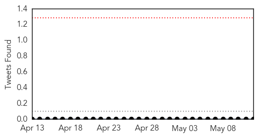
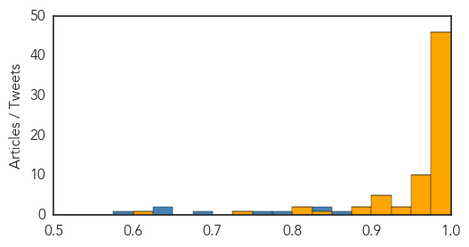

Measles
30-Day Web Trend
2 alerts, 0 warnings

30-Day Twitter Trend
0 alerts, 0 warnings

Article Locations

Article Confidences

Top Articles:
- 0.990
- News Scan for May 11, 2015
- 0.980
- Two Hamilton schoolkids diagnosed with measles
- 0.978
- Two measles cases confirmed in Hamilton « LiveNews.co.nz
- 0.951
- After Ebola, Measles: Several Liberian Kids Lack Treatment
- 0.876
- Measles cases in WV up - Philippines
- 0.859
- Philippines: Measles cases in WV up
- 0.853
- Measles may weaken immunity for more than two years
- 0.839
- Students in isolation from measles
- 0.832
- MMR Vaccines Strongly Recommended in Light of Recent Mumps and Measles Outbreaks
- 0.822
- To vaccinate or not to vaccinate? That is the question
- 0.792
- Measles vaccine cuts risk of other childhood diseases
- 0.756
- Vaccines & Viruses: California vaccine bill not immune to changes
- 0.756
- South Forsyth student didn't have measles after all
- 0.625
- More Nevadans Are Getting The Measles Vaccine
- 0.515
- Western Hemisphere Wipes Out Its Third Virus
Top Tweets:
-
No tweets found for May 12, 2015
Ebola
30-Day Web Trend
0 alerts, 0 warnings

30-Day Twitter Trend
0 alerts, 0 warnings

Article Locations

Article Confidences
Top Articles:
- 1.000
- Liberia Declared Free of Ebola
- 1.000
- Ebola crisis: No useful data likely from vaccine trials as virus stamped out of West Africa, WHO says
- 1.000
- The Record: Ebola crisis fades
- 1.000
- Liberia Ebola-free, but 'can't relax yet,' WHO says
- 1.000
- WHO declares end of Ebola outbreak in Sierra Leone, but neighbor Guinea struggles to end virus
- 1.000
- Ebola crisis: No useful data likely from vaccine trials as virus stamped out of West Africa, WHO says
- 1.000
- Baptist leader celebrates Ebola-free Liberia
- 0.999
- Médecins Sans Frontières slams the World Health Organisation’s response to Ebola
- 0.999
- Liberia’s achievement against Ebola is monumental — WHO
- 0.999
- Ebola-free Liberians now eligible for visas
- 0.999
- Liberia holds party after 'beating' Ebola
- 0.998
- Kenya lifts travel suspension on Ebola-free Liberia -
- 0.998
- Liberia celebrates end of Ebola outbreak
- 0.998
- Liberia celebrates as WHO declares the nation clear
- 0.998
- President Officially Receives WHO Ebola-Free Declaration
- 0.998
- Nurse becomes Italy's second Ebola case
- 0.998
- Kenya lifts travel suspension of Ebola-free Liberia
- 0.998
- WHO criticised on Ebola
- 0.998
- Ebola-free Liberia pledges support to remaining 2 Ebola-hit countries - Xinhua
- 0.998
- Kenya lifts travel suspension on Ebola-free Liberia
- 0.998
- Ebola-free Liberia pledges support to remaining 2 Ebola-hit countries
- 0.997
- Delay post-Ebola drawdown
- 0.997
- LIBERIA HAS FINALLY BEEN DECLARED EBOLA FREE
- 0.996
- ‘Liberating Guinea, S/Leone, the Next Challenge’
- 0.995
- Liberia unshackled from the stranglehold of Ebola
- 0.995
- Liberians Celebrate After Ebola Free Declaration
- 0.994
- Liberia’s government holds celebration to mark Ebola’s end
- 0.994
- As Ebola disappears, no useful data seen from vaccine trials -WHO
- 0.994
- UVa Patient Tests Negative For Ebola
- 0.994
- Liberia celebrates end of Ebola epidemic
- 0.993
- Liberia Is Ebola Free. We Can Do More.
- 0.993
- Now Ebola-free, Liberia’s need to restore maternal health care takes centre stage - Liberia
- 0.992
- One Year Later, Ebola's Lessons for the Next Big Outbreak
- 0.992
- Doctor barred from St. Luke's clinic after return from Sierra Leone
- 0.991
- WHO works on plan to tackle disease outbreaks after Ebola fiasco.
- 0.990
- US Congratulates Liberia Gov’t
- 0.988
- Ebola: Expert panel urges 'unified entity' within WHO for emergency response
- 0.988
- UPDATE: UVA Medical Center Patient Tests Negative for Ebola
- 0.988
- Ebola declared dead in Liberia
- 0.985
- WHO works on plan to tackle disease outbreaks after Ebola
- 0.984
- WHO works on plan to tackle disease outbreaks after Ebola fiasco
- 0.980
- WHO works on plan to tackle disease outbreaks after Ebola fiasco
- 0.978
- Missionary, Ebola Survivor and Indiana University Alum Challenges Medical School Grads to Remain True to Their Purpose
- 0.978
- Expert panel identifies gaps in WHO's Ebola response 12/05/2015
- 0.978
- Missionary, Ebola survivor and IU alum challenges medical school grads to remain true to their purpose
- 0.976
- “Alive To Tell The Story”
- 0.975
- AfDB Rep Wants Resilient Health System In Liberia
- 0.973
- Liberians Hit the Streets for a Joyous "Goodbye Ebola" Party
- 0.972
- Remarks By World Bank Liberia Country Manager Inguna Dobraja at the Declaration of the End of the Ebola Outbreak in Liberia - May 11, 2015
- 0.970
- WHO Works on Plan to Tackle Disease Outbreaks After Ebola Fiasco
Showing top 50 articles...
Top Tweets:
- 0.980
- As Ebola disappears, no useful data seen from vaccine trials: WHO - Reuters http://t.co/ufRA4pqD2p ebola EVD
- 0.962
- As Ebola disappears, no useful data seen from vaccine trials, says WHO - Fox News http://t.co/3S74G78FMA ebola EVD
- 0.943
- Nurse who worked in Sierra Leone tests positive for Ebola after arriving in ... - Minneapolis Star... http://t.co/HtiA1bGYkg ebola EVD
- 0.939
- WHO works on plan to tackle disease outbreaks after Ebola fiasco - Yahoo News http://t.co/VG2Ed3LzWQ ebola EVD
- 0.937
- Nurse becomes Italy's second Ebola case - Yahoo News http://t.co/bmnSt4mDTP ebola EVD
- 0.890
- WHO Issues Interim Advice on Sexual Transmission of Ebola - Medscape http://t.co/Vgqf2w65UN ebola EVD
- 0.877
- WHO to Accelerate R&D for Ebola, Other Diseases - Voice of America http://t.co/ke1v6rrXv5 ebola EVD
- 0.844
- Bavarian Nordic gets 50 million euro EIB loan for Ebola vaccine - Reuters http://t.co/RGfl9izHe3 ebola EVD
- 0.793
- May 12 news overview on avianflu avianinfluenza Ebola EbolaResponse MERS NepalQuake Health here: http://t.co/kYmYzuLKt3
- 0.767
- End of Ebola Celebrated in Liberia - http://t.co/FMQyohd10H http://t.co/xp6pnEH7b5 ebola EVD
- 0.755
- As Ebola disappears, no useful data seen from vaccine trials: WHO - Reuters http://t.co/7NZSnqfiZt
- 0.725
- WHO Needs Reforms in Wake of Ebola Crisis, Report Says - New York Times http://t.co/8emdl5RxTs ebola EVD
- 0.718
- Meet a Feminist Hero at the Heart of the Ebola Crisis - Huffington Post http://t.co/ONjuvDZ7Sn ebola EVD
- 0.699
- Are lessons going unlearned in crisis response? ebola lessonslearned http://t.co/0x7w9WDXEd
- 0.682
- Liberia's Ebola-Free, But Not Out of The Woods Yet - http://t.co/FMQyohd10H http://t.co/iwxU4FzEUs ebola EVD
- 0.628
- As Ebola disappears, no useful data seen from vaccine trials, says WHO - Fox News http://t.co/lIoYNdYqf5
- 0.614
- Over the weekend, CDC sent our 1,000th Ebola deployer to Sierra Leone, a CDC retiree returning to aid the response: http://t.co/AJ9cjt158t
- 0.601
- We are happy: from Paynesville, Monrovia, Liberia Ebola https://t.co/mtwBg4JRLJ
- 0.544
- Ebola, Liberia and the Cognitive Dissonance of Development Research lessonslearned http://t.co/SqJTpZjjwj
- 0.535
- Dr Chan: We are likely very close to having a vaccine that can protect against Ebola http://t.co/4bMdyTsxNp
- 0.524
- After Ebola outbreak, expert panel urges ‘unified entity’ within for emergencyresponse: http://t.co/eqRLWIp07M
- 0.517
- Dr Chan: The Ebola R&D effort has mobilized people, institutions & resources in ways never seen before http://t.co/4bMdyTsxNp
- 0.514
- Dr Chan: We have four Ebola rapid diagnostics to detect infection, and two of these are point-of-care http://t.co/4bMdyTsxNp